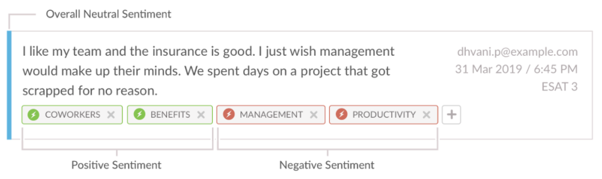
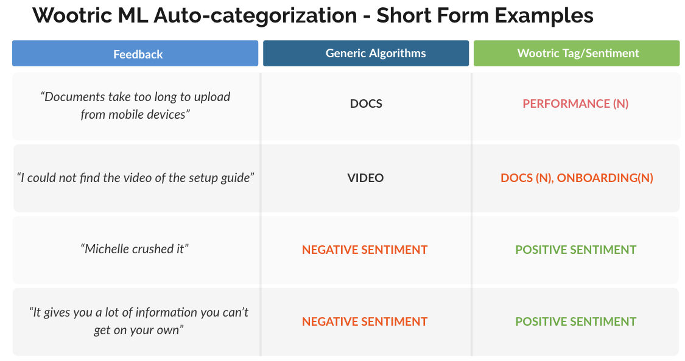
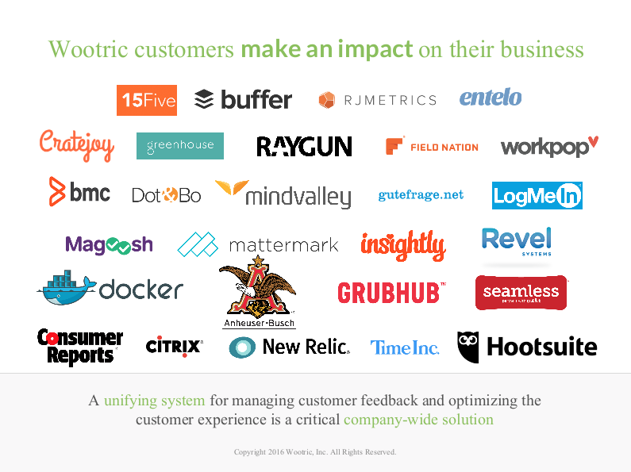
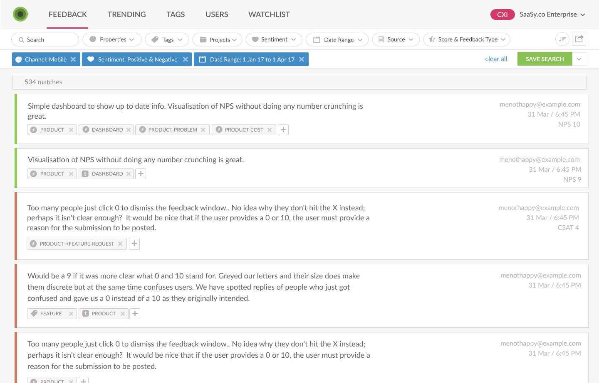
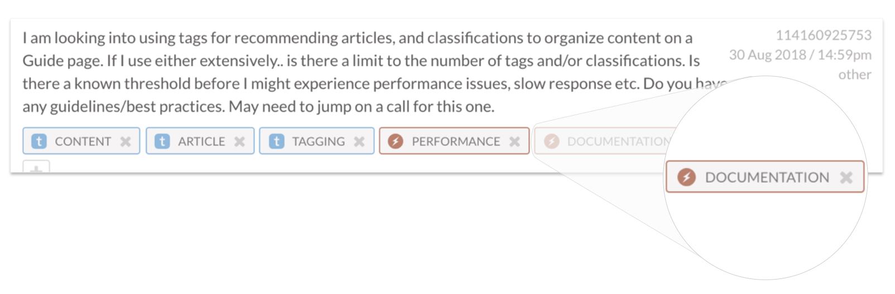
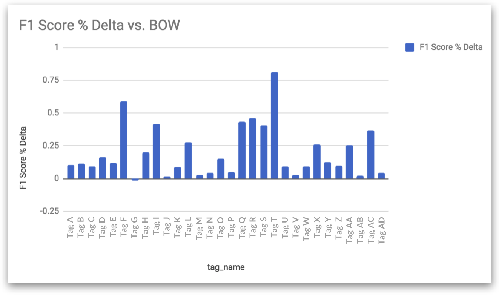
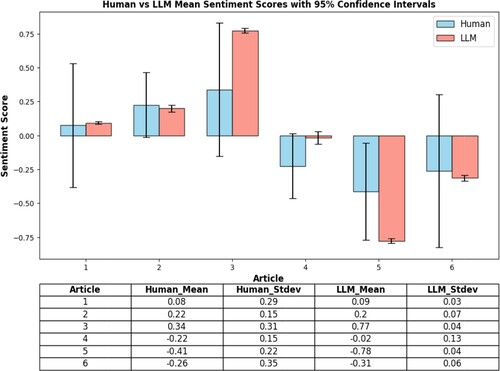
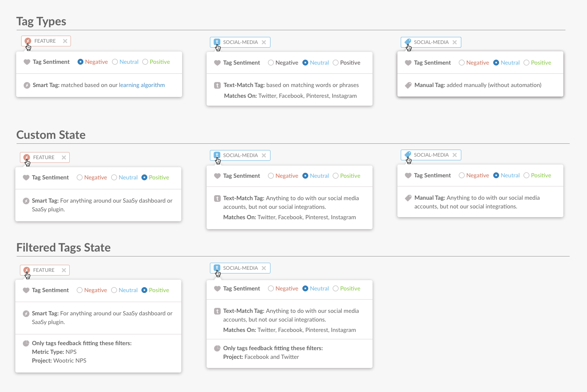
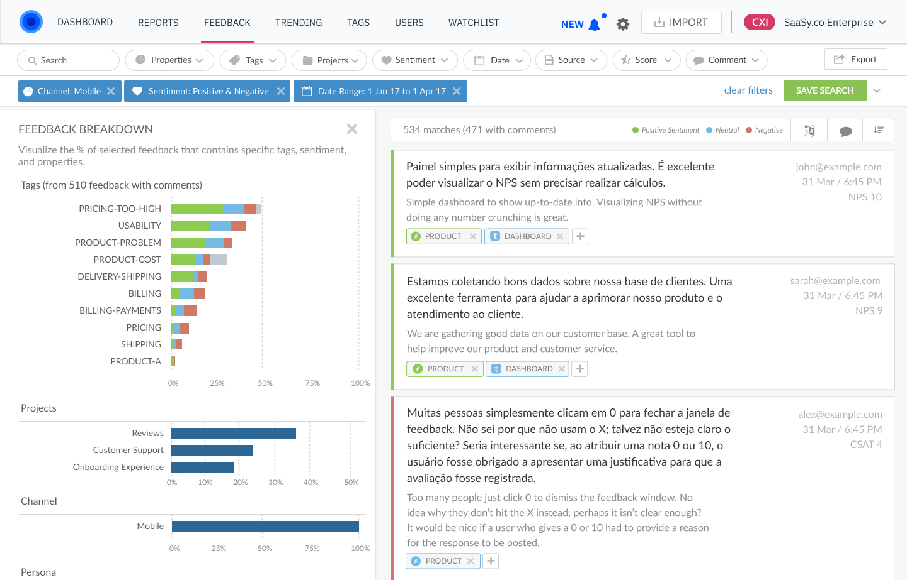

Building trust in AI auto-tagging
- Company
- Wootric (acquired by InMoment)
- Product
- CXInsights (CXI)
- My role
- Lead Product Designer
- Focus
- AI tagging, sentiment, trust
Context
What is CXI?
CXInsights (CXI) was Wootric’s app for analyzing open-ended survey feedback at scale.
Each comment was tagged by topic, like UX/UI or ONBOARDING. Every tag got its own sentiment score, and so did the comment as a whole. We grouped sentiment into Negative, Neutral, and Positive.
The problem
Customers didn’t trust the AI
“I think the AI could be better.”
Anonymous G2 customer review
Customers didn’t have confidence in AI to do auto-tagging and apply sentiment correctly.
For our Enterprise customers who had millions of responses, they wanted all their responses in one place with the AI run on top of it. So we needed a solution that scales.

Goals
Objectives
- 01
Earn confidence
Automatically tag feedback and apply sentiment scores in a way that gives customers confidence it’s been done correctly.
- 02
Scale across customers
Design the system so it scales across customers and industries.
- 03
Make it actionable
Add reporting that gives customers actionable insights and limit manual work.
Research
Listening to enterprise customers
After a dozen interviews with Enterprise customers, we narrowed down the list of issues.
“As with any AI tool, to get the detailed information we require, there is a lot of ‘training the tool’ to detect our needs, but working with their data scientist to get there.”
Wootric customer
“The autotagging, while nice, has no exclusions (so you can’t separate ‘bad’ from ‘not bad’), which requires some manual checking for accuracy.”
Wootric customer
“Text analytics that supports Danish, Swedish, Norwegian and Finnish.”
Wootric customer
Exploration
First test: generic LLM models
We started by testing generic models with our customers. They missed a lot of context. “Michelle crushed it” came back negative. A comment about uploading documents on mobile got tagged DOCS instead of PERFORMANCE. It wouldn’t work well enough for our customers.

Approach
Custom models, built with customers
Customers wanted the AI to be at least as good as their own teams already were at tagging feedback. Our three personas were spread across a wide range of industries, so we partnered with customers to create training data for each one.


One tag set per industry
Each industry got its own set of Smart Tags, trained on that industry’s feedback. Every tag came with a plain-language definition, so customers knew exactly what it would catch.
Testing
CXI beta
We gave customers a beta version of CXI and let them use it while we gathered feedback.

Feedback
What customers asked for
“If I update a tag or sentiment, that should update the model.”
Customer ask
Why we said no
- Retraining was expensive.
- The training data was the source of truth, not individual edits.
- Complaints were about 2 surveys out of 100.

“Can I play with the model?”
Customer ask
Why we said no
- Sentiment was Negative, Neutral, or Positive, but we set the score ranges that decided each one.
- Each tag also had a probability cut-off for whether it applied. That could be changed.
- In testing, exposing these settings added more complication and questions than it helped.


Solutions
Giving customers control without retraining
More auto-tagging control
- Scoped tags. Tags can apply only to feedback that matches specific filters.
- Text Match tags. Cover what Smart Tags missed, using phrases the customer chooses.
- Tag descriptions. Shown on hover, so customers define their own tagging system and see it where they need it.

Multi-language
- Translation toggle. Turn translations on and off.
- Inline translations. Added directly onto the feedback, so it’s easy to read in context.

Proof
AI vs. humans
Trust needed evidence, so we ran a test with a CXI customer.
- The test
Five people on the customer’s team each tagged the same 500 new pieces of feedback. We compared their tags to our model’s on those 500.
- Results
(1) The team was inconsistent, catching some tags and missing others. (2) The model tagged everything the team caught, plus a couple they missed. (3) All five team members combined were only as accurate as the model.
- Conclusion
The model’s error rate was so small it was statistically insignificant for customers with millions of responses, and it saved them a huge amount of time. Wootric used this case study often.
5
team members tagging
500
responses each
1 model
as accurate as all five people combined
Results
Outcomes
- Fewer complaints. After we covered the most urgent customer issues, users complained about the AI much less.
- Easier sales. Customer stories and our AI case study helped the team get buy-in from new companies.
“Text sentiment with machine learning tags is an awesome addition to the tool. We implemented the tool two years ago and are pleased to see the progress in the right direction.”
DocuSign
“Auto-tagging is very accurate, and the default feedback breakdown column is very helpful.”
RingCentral
“We love the fact that it automatically performs basic NPS analysis and automates the time-consuming task of organizing qualitative feedback.”
Resultados Digitais